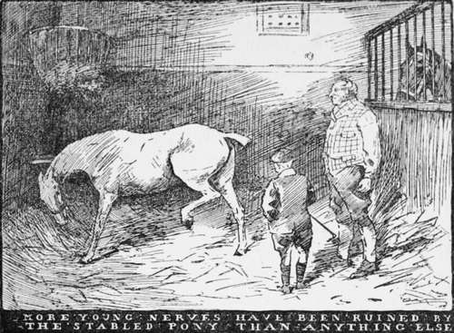

Chapter I. Food, Physic, And Exercise
Description
This section is from the book "Horses, Guns, And Dogs", by J. Otho Paget, George A. B. Dewar A. B. Portman, And A. Innes Shand. Also available from Amazon: Horses, guns and dogs.
Chapter I. Food, Physic, And Exercise
The boy who wants to ride and own horses eventually should know all about them. The engineer who hopes to get to the head of his profession has to pass through the drudgery of the workshop before he can rise to a higher plane. The smallest detail and the ordinary routine of any business or pleasure ought to be at the finger-ends of the man who wishes to become the real and not the nominal controller of the people he employs. These truisms are so well known that it may seem unnecessary to set them down here, but it is as well to impress them on your memory, as we are all rather inclined to fly before we can walk.
If your parents can afford to keep horses, they can probably also afford to pay men to look after them, and therefore the whole of your holidays need not be spent in the stable. You can, however, get a rudimentary idea of the way things should be done if you ask your father's head man to give you a little instruction—how to groom a pony, how to put a saddle and bridle on, etc, for there is a knack in performing these operations. If you are born to wealth, you may not be obliged to saddle a horse more than two or three times in your life, but, when the occasion does come, you would like to be able to do it properly. Knowledge of all kinds is always worth acquiring, and you can never tell when it will be useful. Take the head of the bridle in the right hand, the bit in the palm of the left, then slip your thumb in the corner of the horse's mouth, when you will find he will open it, and the thing is done.
When you take your pony out yourself, you should make a practice of trying all four feet to see if any shoes are loose, and if there are any clinches up that he might possibly cut himself with. The clinches are the ends of the nails that have been hammered down, but which work up as the shoe wears thin.
The boy who is fortunate enough to live in the country should not aspire to a stabled pony until he has become a fairly proficient rider. The pony that lives in a stable and is corn fed, is apt to develop tricks which are disconcerting to the inexperienced youthful horseman, and it is all-important to the beginner to have full confidence in himself. Confidence is the first thing to be acquired, and anything to shake it is liable to injure the nerves.
A feed of corn the day he is ridden is quite enough to keep a pony in good heart at grass, and more young nerves have been ruined by the stabled pony than anything else. This is a picture of what frequently occurs. Master George comes home for the summer holidays, and his pony, who has been at grass, is brought up. For the first week or two he rides regularly, and then there is a cricket match to be played, or something more exciting than a lonely ride. Meanwhile the pony, who was rapidly becoming fit, has the same allowance of corn as a sixteen-hand horse and little or no exercise. No groom would ever think it necessary regularly to exercise a pony. The day comes when Master George wants to ride again, and John is told to saddle the pony. There is a little prancing about at the start, but except that George thinks his pony's back feels higher than usual, all goes well until they reach a strip of grass. George decides to have a canter, and digs in his heels. The next minute the green grass rises up to meet him, and then he finds it hitting him hard in the back. He has only been kicked off, but it is a very unpleasant sensation, and very bad for the nerves.
The winter holidays are of course different, and two days a week hunting will be sufficient to keep any pony exercised, but in the summer no boy likes to be forced to ride every day—it is too much like the regular routine of school.
I do not, however, advise the boy who is only learning to ride to begin hunting at once, as a pony may be the quietest beast on ordinary occasions and yet, directly he hears hounds, develop an unexpected and uncomfortable fire.
The nerves of a boy are very sensitive, and the more highly strung they are, the more liable they are to feel the impression of any shock. The gradual growth of manhood's vigour will strengthen them, and the nervous lad is most likely to become the man with iron nerve. Despair not therefore, parent, because your son appears timid at the start; it is not funk, but merely a feeling of insecurity in the saddle which begets a want of confidence. The boy who gets on to the back of a pony with fear and trembling, will cheerfully stand up to a bigger boy than himself and take a hiding like a man. For some reason girls suffer much less than boys from nerves, and it is only in later life they know the curse.
Good nerves are absolutely indispensable to the man who wishes to ride well or to be really successful in anything he undertakes. It means the presence of mind to act on emergencies with quickness and decision. The man with weak nerves does not fail from want of courage, but the shock of an unexpected situation deadens his brain and makes him incapable of acting at the moment. You must forgive me for dwelling on this subject, but it is so all-important to you now that I feel there is ample excuse for a lecture.
Nerve is, in the first place, a question of health. Don't begin smoking too early, and, when you do begin, smoke in moderation. You may not feel any immediate ill effects from the free indulgence of the cigarette or pipe, but you are handicapping yourself in the race to a vigorous manhood. The pipe is better than the cigarette, but, if you prefer the latter, limit yourself to a certain number in the week, and don't exceed it. Of course boys would be all the better if they never touched tobacco till they were eighteen ; but if a boy wants to smoke he will, and it is better to do it with the full knowledge of his father than in secret. Fathers forget that they were boys once, and sons don't realise that in the course of time they will become men.
Continue to: